통화 녹음을 글로
녹음 파일이 폴더에 들어오면 자동으로 받아 적고, 나와 상대의 말을 구분해요. 원하면 한 줄 요약도 만들어요.

RappomacOS 메뉴막대 앱 · 무료 · 오픈소스
Rappo(라포)는 통화 녹음과 카카오톡 대화를 맥 안에서 글로 바꿔, 옵시디언에 사람별로 모아 줍니다. 누구와 언제 무슨 얘기를 했는지, 통화였는지 카톡이었는지 상관없이 바로 찾을 수 있어요.
Apple Silicon 맥 · 옵시디언 · 카카오톡 맥 앱
요약: 다음 주 화요일 미팅 장소를 강남역으로 정함
김영희: 자료 메일로 보냈어요! 확인 부탁드려요
나: 토요일 7시 괜찮아
이철수: 견적서 수정본 다시 드릴게요
녹음 파일이 폴더에 들어오면 자동으로 받아 적고, 나와 상대의 말을 구분해요. 원하면 한 줄 요약도 만들어요.
카카오톡 맥 앱의 대화를 방별·월별 노트로 모아요. 새 대화가 오면 알아서 반영되고, 이름 없는 단체방은 참여자 이름으로 보여요.
통화와 카톡을 구분 없이 합쳐, 가장 최근에 누구와 연락했는지 사람별로 보여 줘요.
월이 달라도 한 번에 찾아요. 사람을 고르면 1:1 대화, 통화, 단체방에서 한 말까지 함께 보이고, 날짜별로도 펼쳐 볼 수 있어요.
같은 번호는 가장 최근 녹음 파일의 이름으로 맞추고, 이름이 없으면 ‘정보 없음’으로 표시해요.
음성 인식과 대화 정리는 모두 내 맥에서 이뤄지고, 결과는 내 옵시디언 볼트에만 저장돼요. 서버로 보내지 않아요.
Rappo 폴더를 문서 폴더 같은 곳에 둬요.bash ~/Documents/Rappo/install.sh필요한 것: Apple Silicon(M1 이상) 맥, Homebrew, 옵시디언 1.9 이상, 카카오톡 맥 앱. 통화 요약은 선택 사항으로, Claude Code가 있을 때 만들어져요.
녹음 파일 이름은 이름_전화번호_YYYYMMDDHHMMSS.m4a 형식을 읽어요 (예: 홍길동_01012345678_20261126143000.m4a).
Rappo는 어떤 데이터도 수집하거나 서버로 보내지 않아요. 녹음과 대화는 내 맥에서만 읽고, 결과는 내 옵시디언 볼트에만 저장해요. (통화 요약을 켜면 전사문이 Claude Code를 통해 Anthropic으로 전송돼요.) 통화 녹음과 대화 기록은 상대방의 개인정보이기도 하니, 관련 법과 상대방의 뜻을 존중해 사용해 주세요.